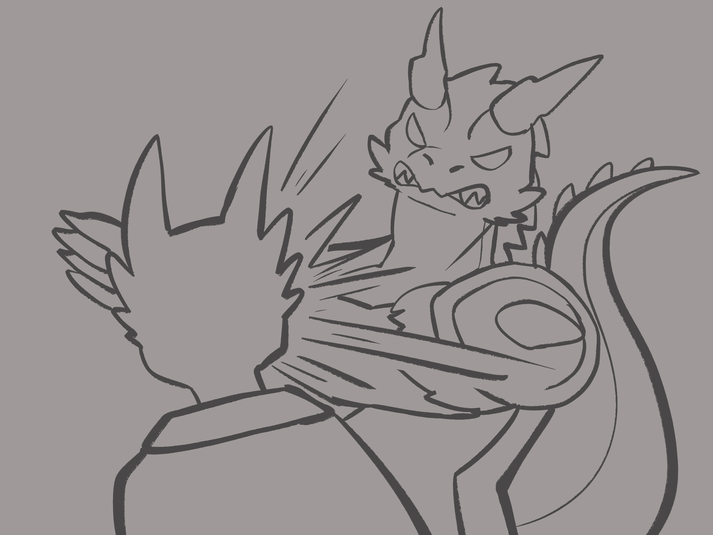

Chapter 3: whodunit
Heir to Rathanad

Heir to Rathanad
15049.05.03
Theramond Aryltih，阿龍的叔叔，在案發現場陪伴著冒險者們。Arylith 家族的其他成員，則各自回到房間休息。敞開的大門，走入了一名熟悉的身影。是龍人型態的 Harrel。
Harrel 向 Vaerodan 致上了他的哀悼，也提議，讓冒險者們協助調查，並於今日日落前定奪這樁事件的幕後黑手究竟是何人，作出審判。眼看 Harrell 虛假的愁容，阿龍內心憤恨不已，但此刻，他已在身遊戲中，不是該發脾氣的時間。
「如果失敗了，你會後悔這一切。」那是龍型態的 Harrel，也就是 Myz’haril 曾對阿龍說過的話。
Theramond 提供了他與已故的哥哥 Vaerodan 在家裡的辦公室，讓冒險者們當作審訊室。同時，他也授權他們能在這個家裡任何房間自由活動。冒險者們開始分頭進行調查。
雷亞先到了馬棚，以德魯伊的能力化身成一匹馬，和昨晚被羅羅牽來的 Green 的馬溝通，得知昨晚曾經有巡邏隊經過。
鑰、羅羅和 Maribel 到畫室搜集線索。如第一眼所見，在阿龍父母深厚的那幅畫與他們的死狀相似，畫風很顯然與阿龍的堂妹 Nylessa 一致。刺在兩人胸口的匕首十分精準，並未造成太大的傷口，血液也沒有到處噴濺，只有向下流淌到死者的腿上而已，地面是乾淨的。
鑰以自己的經驗判斷，案發時間應該是昨晚 10:00 到凌晨 2:00 之間的時間。
Maribel 注意到畫桌上有兩個茶杯。羅羅拿起來檢視，發現除了茶漬外，還有可疑的白色粉末。Maribel 輕輕蘸了一點起來抿一口，有點麻麻的味道。
阿龍、毛毛和 Green 待在審訊室，Theramond 是他們第一個審問的對象。他說明自己在晚餐後，都在這裡（即辦公室）忙碌，睡前才回到房間，當時他的太太 Enelmor 已經睡了。
冒險者們一致覺得 Nylessa 是嫌疑最大的，畢竟他是最常出現在案發現場「畫室」的人。Theramond 帶著大家到 Nylessa 的房間。在 Nylessa 的同意下，毛毛進到房間內進行調查，看到房間內有放部分的畫具。因為 Nylessa 的房間太小，阿龍、毛毛、雷亞和 Green 一起將 Nylessa 帶回審訊室去問話。
同一時間，鑰、羅羅和 Maribel 來到房子深處的書房調查。羅羅找到了一本與「記憶」有關的魔法書，甚至有一頁有個非常小的摺痕。那一頁是「竄改記憶」的魔法。鑰也找到了一本神話故事書，裡面有提到和 Nylessa 的畫作十分相似的故事：龍，都是成對出現的，而在他們死前，他們會與另一半成對盤旋在空中，最後消失。
書房緊密排列的書架用力一推，竟然是可以動的。冒險者們合力推動它，竟看見對面是另一個房間：阿龍的堂弟 Vaelric 坐在床上，眼睛瞪得老大。Vaelric 坦承這是他自己建的密道，雖然書房就在他房間隔壁，但只要透過密道，他連房間門都不用出去就能進到書房，多麼方便啊！
阿龍、毛毛、雷亞和 Green 詢問 Nylessa 前一晚的行蹤。Nylessa 表示自己晚餐後便到畫室去，中間一度跑去找他弟弟，然後又回到畫室去了。大約晚上十點左右，他的伯伯 Vaerodan 和伯母 Selyra 來到畫室，於是他便去備茶。奉完茶後，他便離開畫室了，也不清楚伯伯、伯母在畫室待多久以及做了什麼事。Nylessa 也表示平常都是他和弟弟 Vaelric 兩人輪流奉茶，昨晚也是如此。
鑰、羅羅和 Maribel 和 Vaelric 詢問，得知他昨天晚餐後不是在自己房間，就是在書房，他也承認自己有在看那本關於記憶魔法的書。Vaelric 也提到他曾對 Nylessa 施行過竄改記憶的魔法。這點讓冒險者們提高了注意。
午餐時間，冒險者們與 Arylith 一家在餐桌用餐。Harrel 再度出現，加入了餐會。冒險者們對於 Harrel 為何可以這麼隨意地進出 Arylith 家，甚至加入午餐，感到疑惑。Theramond 表示 Harrel 是這裡的士紳，他願意來訪，是很值得開心的事。
阿龍的堂姐 Serathe 的眼神和前一天一樣充滿敵意。坐在他的正對面，阿龍也很不放鬆。插在他父母遺體上的兩把匕首十分精緻，上面還有他們的家徽。Serathe 是這家人裡唯一的習武之人，也據說非常喜歡武器，因此這兩把匕首很有可能就是來自他的。Serathe 答應在午餐後，讓冒險者們來他的房間看他的武器庫。
午餐期間，Harrel 不斷以心電感應詢問阿龍的狀況。阿龍表示大家都掌握了部分的資訊，但沒有足夠能拼起所有拼圖的方法。Harrel 建議阿龍去刺激他們的情緒，讓 Arylith 家的人被激起後說出他們內心真正的想法或事實，而不是像現在，大家都只是在說些場面話而已。
午餐後，Serathe 領著阿龍，一起來到他的房間，並把門關上。他坐在床上，指著一座大衣櫃，讓阿龍自己打開。裡面沒有衣服，全是武器。掛大衣的空間，放滿了長型的近戰武器，擺得整整齊齊的；底下的抽屜則是放了各種小型的武器，如短劍、匕首、飛鏢等。而另阿龍感到注意的是，比起長型的武器，小型的武器在抽屜內竟然擺得非常混亂，就像是被翻攪過一樣。Serathe 也說大家的房間通常都是開著門的，家人之間沒什麼應該互相提防之處。
在這個私下的空間，Serathe 也坦承自己的臉雖然臭、話雖然難聽，但他並沒有惡意，這只是他習慣的表達方式而已，希望阿龍不要因此覺得難受。眼看堂姐複雜的表情，阿龍好像稍微能理解一點點。另外，Serathe 也說道，自己也是城鎮的守衛隊，平常每天晚上每小時都會外出巡邏，但在昨晚的巡邏過程中，並未發現任何和作案有關的事蹟。
其他冒險者們則利用這段時間，在餐桌和阿龍的嬸嬸 Enelmor 問話。他們得知 Enelmor 平常有失眠的問題，因此很早就會先服用安眠藥，讓自己能睡久一點。而他的安眠藥都是自己磨製的，平常都存放在廚房的櫃子裡。雖然他沒有和任何人提出過這件事，但也沒防著讓大家拿不到。
回到餐桌，叔叔 Theramond 詢問阿龍是否應該要讓大家一樣各自回房間，要詢問任何人時，再去找他們？冒險者們則提出了要大家待在餐桌的請求，以免有人落單後又慘遭毒手。
冒險者們決定透過「誠實之域」的魔法，突破 Arylith 一家的心房。他們主要針對最可疑的 Nylessa 和掌握了「竄改記憶」魔法的 Vaelric 詢問。
Vaelric 坦承自己昨晚曾經對施展過竄改記憶的魔法，而對象是他的姊姊 Nylessa。基於對姊姊的信任，Vaelric 並未詢問他竄改的目的。
Nylessa 也因為記憶被篡改，並不記得自己當時原本的想法。比對先前 Vaelric 的供詞，Nylessa 去找他的時間是在案發時間前，那後續發生的事情應該要記得才對吧？
Vaelric 在被精準的問話下，才坦承昨晚 Nylessa 有請他竄改過兩次記憶。第一次，他的請求是讓自己忘記「動機」，第二次則是讓自己忘記「做了什麼事」。
兇器是任何人都有辦法從 Serathe 的房間拿走的匕首（甚至放匕首的抽屜有被動過的痕跡）；地點是 Nylessa 最常待的畫室；昨晚的茶是 Nylessa 奉的，裡面的安眠藥也是完全沒有防備，可以輕鬆取得；時間是晚上十點到隔日凌晨兩點，幾乎所有人都入睡了；而最有嫌疑的 Nylessa 甚至有過兩次被施放竄改記憶的狀況。所有線索都指向 Nylessa，唯有「動機」還不明。
Nylessa 握著冒險者們遞給他的兩支匕首，他坦承有握著它們的記憶存在。這幾乎定奪了他是犯人的事實。
冒險者們再度施放誠實之域，全力詢問 Nylessa 的動機。Nylessa 表示雙龍的圖畫，是他曾經夢到的畫面。他也表示，雖然 Vaerodan 和 Selyra 是他的伯伯和伯母，但那個家裡沒有人丁，他的家則還有三個年輕的後代，很顯然是更為合適的統治者。就算他的繼承順位很後面，這也是事實—他的目的不是讓自己成為拉撒拿的繼承人，而是單純的「這才是對的事」。
起初，Nylessa 並不特別把這件事放在心上，就算沒有任何改變，日子繼續過下去也沒什麼大不了。但有人持續在對他施加力道，慫恿他，勾起他作案的心。就算 Nylessa 沒有說出名字，冒險者們也都知道那是 Harrel 的惡行了。Nylessa 泛紅的臉頰不是激動的情緒，而是純純的愛意。
「我們通常每天都會見面。但就算沒有見到面，他也有方法傳遞他的心意。」
阿龍站了起身，發起狂暴。他走到 Nylessa 面前，用力的甩了他一巴掌。十多年，相隔十多年的時間，好不容易見到自己的親生父母……
Vaelric 趕緊擋在 Nylessa 和阿龍中間，阿龍不顧一切，朝著 Vaelric 的右臉一巴掌，然後左臉又是一巴掌。兩巴掌，就像 Vaelric 為 Nylessa 竄改的兩次記憶一樣。
Serathe 趕到他的弟弟妹妹一旁，跪了下來。「對不起。」他朝著阿龍低下了頭。「對不起。」
「好的，我想你們都知道事情的真相了。」Harrel 瀟灑的站了起來，朝著門外走去。「現在時間還早，日落時，來我的洞穴找我吧。」Harrel 頭也不回地走出 Arylith 的宅邸，在眾人的面前化身成龍，往他的洞穴飛去。此刻，Nylessa 才真正知道他愛上的，是什麼生物。
「Enelmor，去召喚拉撒拿的人民們吧。雖然是我的家人，但規則還是得要遵守。」Theramond 滿臉愁容，Enelmor 則步出了宅邸。「Cyrinel，我會在審判後，把龍冠的身份交給你。這個審判，就當作我身為代理龍冠，為你做的最後一件事吧。」Thermond 看向阿龍，但阿龍滿心想的，都是未來該如何對那頭高傲的銀龍復仇。